Neues von Quasitutto, 5. Ausgabe
Rückblick auf die Ausstellung „Autofokus“ im Museum Thalwil, Oktober 2024 – März 2025
Im letzten NL berichteten wir darüberDie Photoausstellung Autofocus von Gina Folly war ein grosser Erfolg. Gina Folly hatte über längere Zeit QT MitarbeiterInnen bei der Arbeit fotografiert.
Die Rahmenveranstaltungen, die wir von QT organisierten, wurden unterschiedlich besucht. Alle Veranstaltungen zeigten verschiedenen Aspekte unseres Vereins. Wir sind stolz, dass wir so eine grössere Sache organisieren und durchführen konnten und auf so grosses Interesse gestossen sind. Sind wir doch mit Herzblut dabei.
|
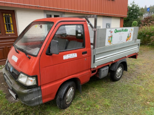 
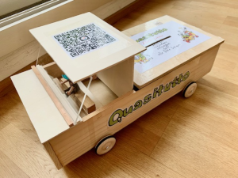 |
Gute Nachricht Unser Piaggio war eine grosse Sorge für uns. Stand doch im März 2025 der Vorführtermin an. Wir waren nicht sicher, ob er nochmals durch die Prüfung kommt. Mit diesem selbstgebastelten Auto sammelten wir während der ganzen Ausstellung Geld für einen neuen Piaggio. Gute Nachricht: der Piaggio ist nochmals durch die Verkehrsprüfung gekommen. Danke allen die da mitgeholfen haben. Natürlich sparen wir weiterhin für ein neues Gefährt. Aufgeschoben ist nicht aufgehoben. Der Moment, an dem unser Piaggio ersetzt werden muss, wird kommen. Während der Ausstellung durften wir bereits 1100 Fr. entgegennehmen. Das Geld bleibt auf dem „Auto-Sparkonto“. Danke allen, die uns finanziell unterstützt haben und es weiterhin tun. Das Sparkässeli ist immer noch offen für Spenden: IBAN: CH60 0900 0000 8576 1700 0 |
Lampen und Velo
Unsere Mitarbeiter haben sich in den letzten Monaten in 2 Bereichen speziell professionalisiert:
|
Lampen auf LED umrüsten Seit 2 Jahren können nur noch LED-Leuchtmittel gekauft werden, die alten Systeme der Glühbirnen und Fluoreszenz- Röhren sind nicht mehr auf dem Markt bzw. verboten. Das hat mit der Tatsache zu tun, dass LED 10 mal weniger Strom verbraucht und zudem 5 – 7 mal länger leuchtet als die herkömmlichen Systeme. Die Kosten sind allerdings 2-3 mal höher und bei dimmbaren Lampen muss der Dimmer meistens ersetzt werden. Wir haben ja schon im letzten Newsletter von dieser Dienstleistung berichtet. In der Zwischenzeit haben wir viel Wissen und Erfahrung erworben bei der Umrüstung älterer Lampen auf die neuen Systeme. Im Prinzip lässt sich jede ältere Lampe auf LED umrüsten. Manchmal braucht es etwas Zeit und Phantasie, um die entsprechenden Teile zu finden und zu installieren. In der Regel sind Adapter erhältlich und bestellbar, wenn Geduld und Zeit vorhanden sind. Die Kosten sind natürlich abhängig vom Aufwand. Wir machen jeweils einen Kostenvoranschlag und falls es mal doch nicht gelingen sollte, verlangen wir meistens kein Geld für die Arbeit. |
Beispiele aus der Praxis Eine alte Jugendstil Wand- oder Deckenlampe mit einer Floureszenzröhre wird zu LED umgebaut: 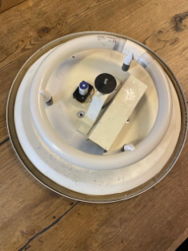 Und hier noch ein Spezialexemplar: 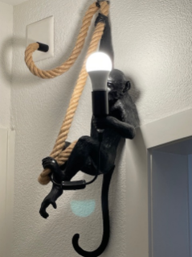 |
|
Unser Velomech in Aktion 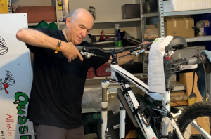 |
Velo - Service und Reparaturen Auf dem Velomarkt hat sich in den letzten Jahren auch einiges getan. Es werden ausserordentlich viele Fahrräder verkauft, was natürlich sehr erfreulich ist, da das Velo kein CO2 ausstösst. Auf der anderen Seite sind die Velowerkstätten dermassen ausgelastet, dass sie fast nur noch die bei ihnen gekauften Velos warten und reparieren können. An dem Punkt kann Quasitutto einspringen. Wir machen gerne den Service für ihr Bike: wir richten die Gangschaltung neu ein, kontrollieren Bremsen, Ketten, Reifen und Licht und ersetzen bei Bedarf Verschleissmaterial. Es spielt dabei keine Rolle, ob es sich um ein E-Bike oder ein normales Velo handelt, beim E-Bike machen wir aber nur den mechanischen Teil, Batterie und Motor können wir nicht warten. |
Fahrradsicherheit
Die Sicherheit bei der Montage der Komponenten ist stets gewährleistet. Die Schrauben werden konsequent mit dem Drehmomentschlüssel überprüft und angezogen.
Dies bewirkt, dass die Komponenten eine feste Verbindung haben und auch nicht zu fest abgeschraubt werden, sodass sie wieder mit den korrekten Werkzeugen gelöst werden können.
Wir verwenden auch ein hochwertiges Fahrrad-Montagefett. Die Sicherheit hat bei uns erste Priorität, jedes Velo wird nach einer Reparatur Probe gefahren, um zu kontrollieren, ob alles in Ordnung ist.
|
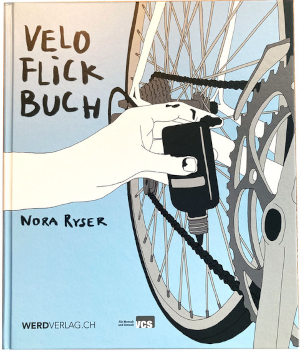 |
Praxisnahes Buch, einfach erklärt. Ideales Geschenk für Götti/Gotte-Kinder, EnkelInnen etc. Zu beziehen bei elLIESYUM, die Buchhandlung an der Schwandelstrasse Nach wie vor können Sie Ihre defekten Gegenstände zum Reparieren in die Buchhandlung elLIESYUM bringen und dort geflickt wieder in Empfang nehmen. Kommen Sie vorbei, auch bei Fragen, Sie werden kompetent beraten. |
Schulprojekt
Im letzten Jahr haben wir uns im Vorstand vorgenommen, uns mit anderen Verbänden mit ähnlichen Zielsetzungen in der Gemeinde zu vernetzen.
|
Da es uns ein wichtiges Anliegen ist, auch die Jugend mit unseren Nachhaltigkeitsbestrebungen zu erreichen, haben wir uns mit dem Verein Ökopolis zusammengetan, um in diesem Bereich ein Projekt mit der Oberstufenschule Thalwil zu lancieren. Wir gelangten mit dieser Idee an die Schulleitung der Oberstufe und durften erfreut feststellen, dass da grosses Interesse an einer Zusammenarbeit anzutreffen war. |
Ein erstes Objekt 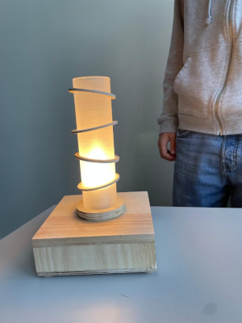 |
Begleitung Projektunterricht Sekundarschule Thalwil
Im vergangenen Quartal haben Hansjörg und ich die 3.-Sek. SchülerInnen bei der Realisierung ihrer Abschlussprojekte begleitet. Das waren spannende Freitagnachmittage! Das Interesse und die Konzentration der Schülerinnen und Schüler hat von Woche zu Woche spürbar zugenommen.
Sie haben gelernt, ihre anfänglich sehr ambitionierten Projekte, wie zB Billardtisch oder Töggelikasten, zu vereinfachen und den technischen und finanziellen Möglichkeiten anzupassen. Die Schülerinnen und Schüler haben ihre Projekte sehr selbstständig und schülergerecht realisiert.
Unsere Unterstützung bestand vor allem in der Beratung und in der sicheren Bedienung von Maschinen und Werkzeugen zur Holzbearbeitung. So sind wir natürlich gespannt auf die Präsentation und Ausstellung der Abschlussarbeiten.
Koni Müller
Reparieren – Umgestalten – Upcyclen – Kreislaufwirtschaft
Das sind die zentralen Anliegen von Quasitutto
Thema heute: Plastik- Kunststoff recyclen
- Plastik sammeln – Kunststoff sammeln
- Kunststoff ist kein Abfall
|
Grundsätzliches Plastik nennt man alle möglichen Kunststoffe. Sie werden aus Erdöl mit einigen Zusatzstoffen hergestellt. Der am häufigsten verwendete Kunststoff ist Polyethylen PE.
Warum ist Kunststoff nicht abbaubar? Mikroorganismen sind nicht in der Lage Kunststoffe vollständig zu zersetzen. Das bedeutet, dass Mikroplastikartikel kontinuierlich kleiner werden, aber nicht vollständig abgebaut werden. Basierend auf verfügbare Daten schätzt das BAFU (Bundesamt für Umwelt) , dass jährlich 1400 Tonnen Makro- und Mikroplastik in unsere Böden, Gewässer und deren Segmente gelangen. |
Abfall ist der Rohstoff von Morgen Verbrennen wir alles einmalig, zerstören wir wertvolle Ressourcen, oder nutzen diese nicht so, wie es heutzutage möglich wäre. Diese Ressourcen sind endlich Produzieren wir alle Kunststoffe neu, bedarf es dafür natürliche Ressourcen und viel mehr Energie, als wenn wir Abfälle recyclen und konsequent wieder verwenden. |
Gemeinde Thalwil hat am 30. September 2024 publiziert
Auszug aus dem ganzen Artikel: Entsorgung Zimmerberg bietet ein Recycling für Kunststoffverpackungen an. Migros und COOP haben sich der Vereinbarung mit dem Bezirk Horgen angeschlossen. Start Dezember 2024. Die Säcke können bei Migros, Coop gekauft und gefüllt abgegeben werden. Rollen mit 10 Stück, zu 17l, 35l, und 60l erhältlich.
|
Warum kosten diese Säcke? Da es sich bei Kunststoffverpackungen um Siedlungsabfälle handelt, muss die Entsorgung gemäss ART. 32a Bundesgesetz über den Umweltschutz verursachergerecht finanziert werden. Der Preis des Sammelsacks ist so festgelegt. dass die Sammlung kostendeckend betrieben werden kann. Tipp: Schauen sie mal in ihren Kehrichtsack und zählen sie alle ihre Kunststoffabfälle. Überrascht? |
Kunststoffsammelsack 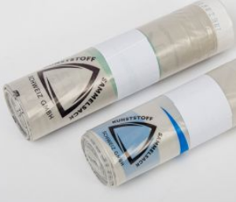 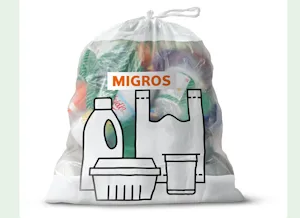 |
|
Mehrwegsäcke für Früchte und Gemüse 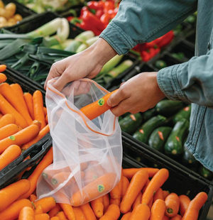 |
Wichtiger Hinweis: In der Migros und beim Coop können Mehrwegsäcke gekauft werden für Früchte und Gemüse. Ist doch mal ein Anfang... |
Blickpunkt, Magazin der Stiftung für Konsumentenschutz, Ausgabe April 2025
Plastikrecycling: Schlechte Lösung und falsches Versprechen: Die Plastikindustrie vermarktet Einwegprodukte und präsentiert Recycling als Lösung – doch das funktioniert nicht. Plastik enthält unzählige Chemikalien, die ein effizientes Recycling verhindern. Statt neue Sammelstellen schaffen, wäre die Rückkehr zu bewährten Mehrwegsystemen aus Glas sinnvoller.
Der falsche Kreislauf: Die Plastikindustrie hat über Jahre hinweg Einwegprodukte als „praktische und effiziente“ Lösung für den Alltag vermarktet. Um die wachsende Menge an Kunststoffabfällen zu rechtfertigen, wird Recycling als Lösung präsentiert. In der Realität gibt das keinen geschlossenen Kreislauf.
Warum Recycling nicht funktioniert: Kunststoffe bestehen aus Tausenden verschiedener Chemikalien, wie Additive und Farbstoffe. Alle diese Zusätze sind je nach Produkt unterschiedlich kombiniert, darum ist ein effizientes Recycling unmöglich.
Mehrweg statt Einweg: Der Weg aus der Plastikflut: Früher war in der Schweiz ein funktionierendes Mehrwegsystem für Glas etabliert. Glas setzt kein Mikroplastik frei und enthält keine schädlichen chemische Additive.
Der Konsumentenschutz fordert: Der sinnvolle Weg liegt nicht in der Einführung neuer, von den KonsumentInnen teuer bezahlten Sammelsysteme, sondern Rückkehr zu bewährten Mehrwegsystemen aus Glas.
Chemikalien: Unterschätztes Problem: Hier der ganze Artikel.
|
Szenen aus dem Repair Café 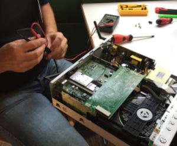 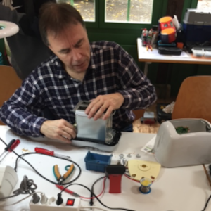 |
Nächste Daten Repair Café:
Mitteilung vom Konsumentenschutz zu 2024: Mehr als 27000 Gegenstände wurden 2024 in die Repair Cafés gebracht. 18700 Gegenstände konnten repariert werden. |
Reparaturfreudige Grüsse,
Das Quasitutto-Team
Impressum
- Redaktions-Team: Maria Fritschy und Anna Michel
- Technischer Support: Thomas Hartmeier
Gerne können Sie unser Neues von Quasitutto auch an Interessierte, Freunde und Bekannte weiterleiten. Kritik und Tipps sind willkommen.
Sollte Ihnen Neues von Quasitutto nicht gefallen, können Sie es hier abbestellen.